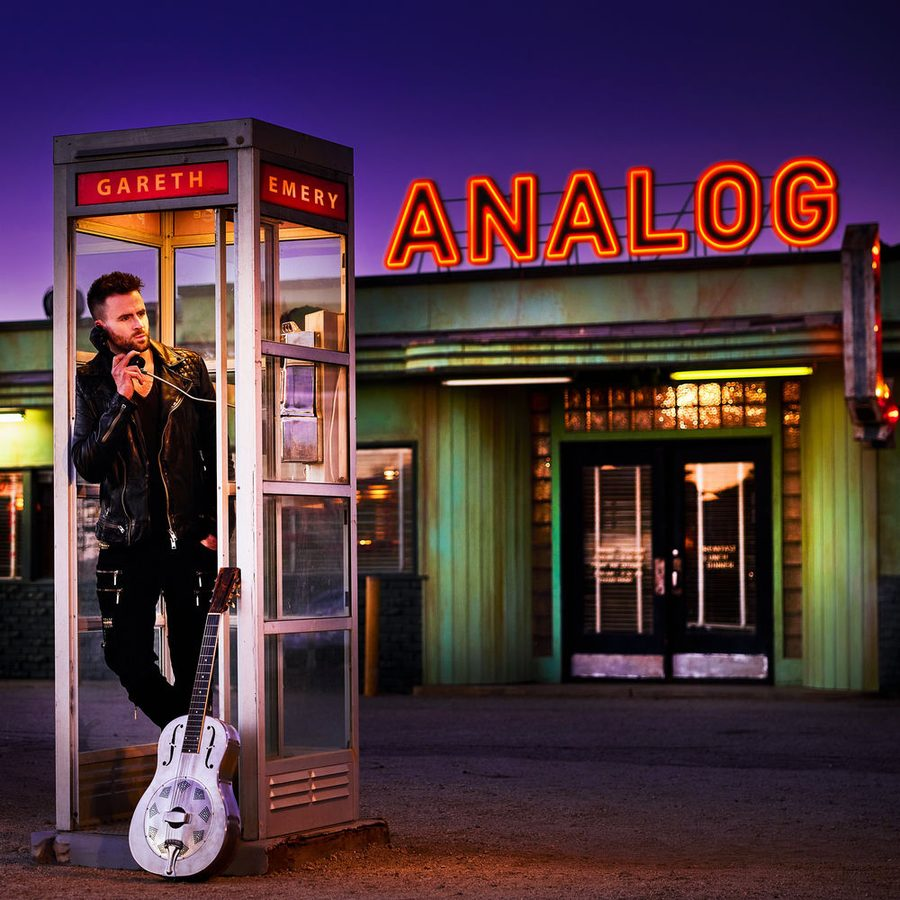

Gareth Emery: Podcasting his way to success


Although dubbed one of the breakthrough artists of 2007 by global trance superstar Paul van Dyk, rapidly rising DJ and producer Gareth Emery is no newcomer to the worldwide scene, having been slogging away in the studio and clubs for well over 5 years. His seminal track ‘Minstral’ (released under the pseudonym GTR) is still remembered to this day with warm and fuzzy feelings, and he’s continued to build on its success over the ensuing years.
Ranked #34 on the DJ Mag Top 100 last year, he’s had a massive 2007 with his weekly podcast radio show and related compilation release – funnily enough, called ‘Podcast Annual’ – getting major recognition from the trance community worldwide. Heading back to Australia for the Gatecrasher tour this month, ITM tracked him down to talk all things electro trance.
Hi Gareth, how’s it going?
A bit jetlagged and in the middle of a house move, but apart from that things are just sweet right now.
First things first, you were tipped by none other than Paul van Dyk as one of the breakthrough artists for 2007. You’ve been doing your thing in dance music for a number of years, so it must feel great to have this sort of validation?
Yeah, it was good. I’ve been around for a while, but 2006 was the year when things really started to happen, so to have someone like PvD’s stamp of approval was obviously a big help. Of course, it doesn’t change how I approach a gig – I still treat each and every gig like it’s my first one, and make sure I play every set to the best of my ability – I’m not going to start thinking I’ll automatically be great because a few magazines said I’m the next big thing, or something.
At some of your Australian gigs you’re being billed as GTR, which I’m assuming is related to the massive hit you had a couple of years ago with ‘Mistral’. What’s the go with that, do you still get billed a lot under this name?
You know, the only place where I’m ever billed as GTR these days is in Australia, and I still haven’t quite worked out why. ‘Mistral’ was five years ago now – all of which I’ve spent producing and DJing almost exclusively under my real name, which is a lot more established now. These days a lot of people wouldn’t even know what GTR means as I discontinued the name a good while ago. Some promoters like to cover both bases and bill me as Gareth Emery (GTR), which is cool.
I was lucky enough to get my hands on your ‘Podcast Annual’ CD recently. I really enjoyed it, is this a good indication of what we’ll be hearing in your live sets?
Roughly speaking, yeah, although it’s tough to pin your sound down to a couple of CDs. CD2 gives a better indication of my live sets, especially when I’m playing shorter peak-time seats. If I’m doing an extended set, then I’ve got more room to venture into the progressive and housey stuff which you’ll find on CD1.
Speaking of your ‘Podcast Annual’ CD, it’s obviously an offshoot of your fortnightly radio show through iTunes. After you launched it in 2006 it became one of the most popular dance music podcasts on the internet: how much do you think this was responsible for getting you out to a wider audience?
Definitely. It still surprises me how popular it is – as the show doesn’t go out live, you sometimes feel you’re sending the music into a black hole, and you never really know how many people are picking up on it, but seems at every gig I play there are people there who tell me they’re big fans of the show and how they never miss an episode… which is reassuring!
As you mention, the first CD of your ‘Podcast Annual’ features a lot of very trancey house music. Do you get a kick out of bringing together these two sounds?
Absolutely – 2007 was a brilliant year for this sort of music, that indefinable middle-ground where house meets trance, with some fantastic records released. However, often this music doesn’t get all that much exposure, so people will probably be less familiar with the music on CD1. I’ve definitely tried to showcase some of the great records this year, and give first-time listeners an introduction to this amazing sound.
The second CD sees you strongly embracing the electro trance sound. Listening to some of these tunes is very exciting for me as I’ve been into trance for over a decade and it’s always welcome to hear some new elements added in there to freshen things up. The way I see it, it’s the tension between the euphoric melodies and the tougher electro sounds that really works. What’s your perspective?
I’d say it’s more than just electro; the thing I love about trance right now is that there’s no predominant sub-genre. Producers are taking influence from techno, house, electro, progressive, minimal, and you’re getting these amazing records coming out of the melting pot which are a hybrid of all of these sounds It’s definitely an exciting time for the sound, and I think the second CD demonstrates that; 13 tracks of pure dancefloor music, very few of which are ‘typical’ trance sounding.
You’ve had a massive hit in the last 12 months with your collaboration with Lange called ‘Another You, Another Me’. That in itself was one of the most striking examples of the electro trance sound and it got picked up a lot around the world. Where you really happy with how this was received?
We did expect it to do well – sometimes records surprise you, but whilst we were making this one, we couldn’t stop dancing around the studio, so we did have an inkling it might be a big record. The thing that surprised me most quite how long people kept playing it for – six months after the release pretty much everyone was still playing it. I think part of its success was that it took all the current sounds, teamed them with a really memorable riff, and it just worked. Hopefully in a few years time when people look back at the electro-influenced sounds that were popular in 2006, they’ll see ‘Another You, Another Me’ as being one of the tracks that was the pinnacle of that particular sound.
Looking again at your recent production efforts, your remix of Albert Vorne’s ‘Formentera What?’ was released on Armada and it was really used to devastating effect on the 2007 edition of Armin van Buuren’s ‘State of Trance’. Was it thrilling to have it showcased in this fashion?
‘Formentera What?’ was very much a track I didn’t see as doing well – when I finished the remix, I thought it was a good, solid track, but nothing more. It still surprises me that it’s got so big, especially when I see people listing it as one of the tunes of the year, but obviously I’m happy about it!
It’s the chopped-up vocals that really stick in your head, what was the inspiration for that?
The main vocal from the track wasn’t quite working for me in the studio, and usually when that happens, a fail-safe method to make it sound a bit better is to chop it up, randomly re-arrange it, and see how it sounds then. In this occasion, it just immediately sounded great and worked well within the track… and that was the hook.
Another high-impact track, which featured on your ‘Podcast Annual’ this time, is your mix of Boosta’s ‘Dance is Dead’. Again, this is another massive example of the electro trance sound. Have you found this track getting picked up a lot so far?
Not really, as this track isn’t an official release, it’s a bootleg I made from the original Boosta track. It won’t be getting an official release, although I did pass a copy on to Armin van Buuren who asked for it… which I shouldn’t really have done, but he’s a hard man to say no to. Anyway, he made it Tune of the Week on A State of Trance and gave it a spanking at his gigs, which was nice, but nobody else has a copy, which meant I was able to include it on my compilation exclusively.
You got ranked as #34 in last year’s edition of the DJ Mag Poll. A lot of DJs insist this doesn’t mean that much in the grand scheme of things, but it must feel great to be rising up the ranks like that. Has it opened a lot of doors?
Well, a lot more doors opened in 2007 than any other year. Whether that was due to the DJ Mag Poll, the podcast, or the records I’ve had out this year, it’s impossible to say. One thing that’s certain though, whatever anyone things about the poll, I’d rather be in it than out of it… I think it’s more a bit of fun than anything else, but like anything else, it’s nice to be in there.
Gareth Emery plays shows in Sydney and Brisbane for Gatecrasher over the coming weeks:
Oct 26 –Gatecrasher – Sublime, Sydney
Nov 2 – Gatecrasher – Family, Brisbane